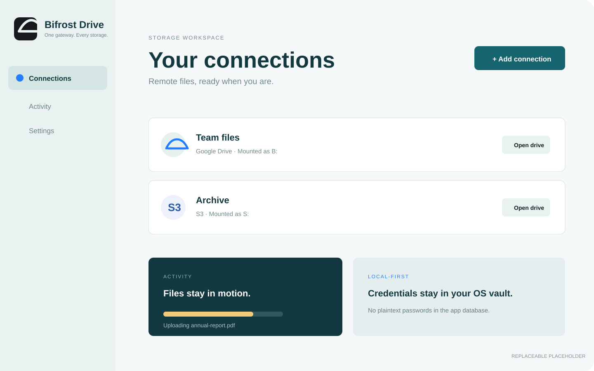
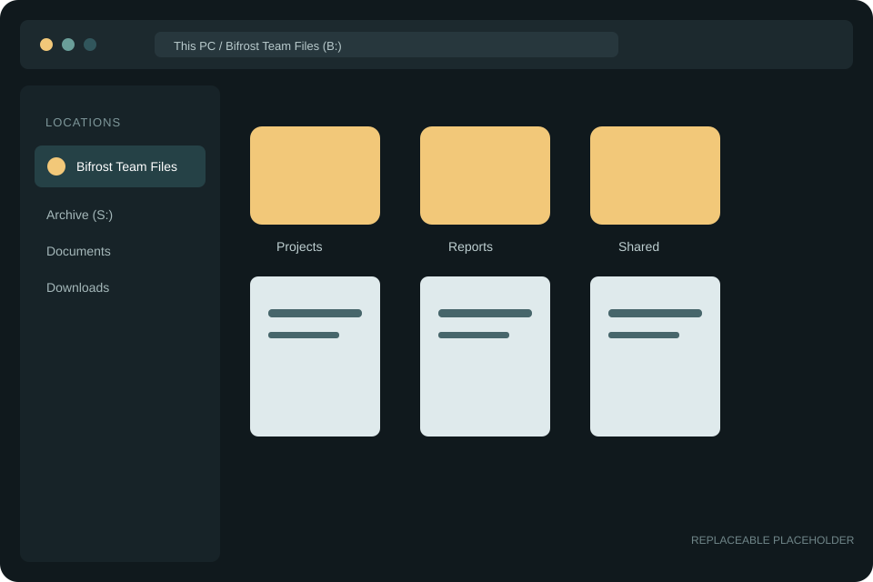

Native credential vaults
Secrets live in Windows Credential Manager, macOS Keychain, or Linux Secret Service — never as plaintext in SQLite.

Remote storage, without the distance
Bring Google Drive, S3, SFTP, WebDAV, FTP, and SMB into the file browser you already use.
 Google
Drive
Amazon
S3
SFTP
WebDAV
FTP
SMB
Google
Drive
Amazon
S3
SFTP
WebDAV
FTP
SMB
A familiar place for every file
Bifrost turns remote services into ordinary filesystem locations. Browse, open, and organize remote files from Explorer or your Linux file manager without learning another dashboard.
Connect with the provider's native credentials or browser sign-in.
Select a drive letter on Windows or a mount parent on Linux.
Your remote files appear where the rest of your files live.

Placeholder image — replace anytimeLocal-first by design
Bifrost connects directly from your computer to your storage provider. It does not operate a cloud relay for your files.
Secrets live in Windows Credential Manager, macOS Keychain, or Linux Secret Service — never as plaintext in SQLite.
TLS certificates and SSH host keys are verified by default. Connections fail visibly instead of silently weakening security.
Your computer talks directly to the storage services you choose, without routing file content through a Bifrost cloud.
Built for the desktop

Writable drive letters and Explorer integration for Windows 10/11.
Read-only FUSE mounts with a user-selected mount location. AppImage and RPM are published for x86_64.

File Provider integration is in development. Signed public distribution is not available yet.
Ready when you are
Choose an installer from the latest GitHub release.
Other operating systems and package formats →